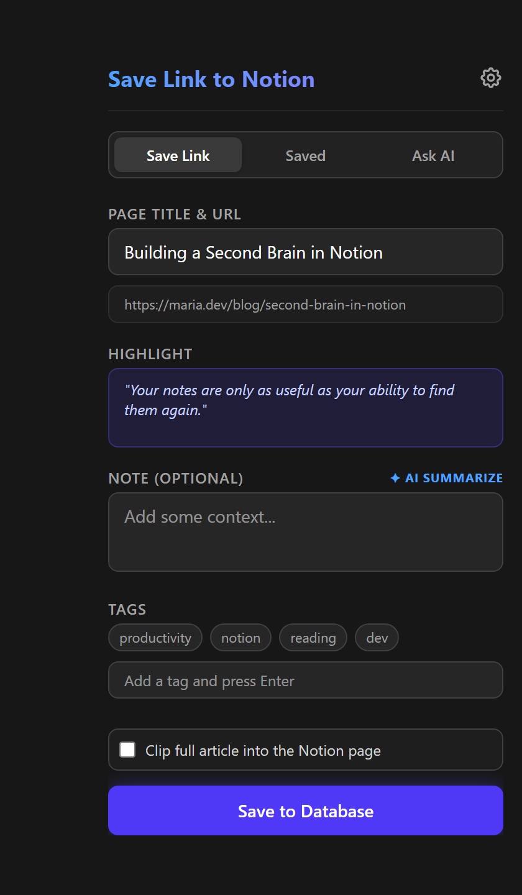
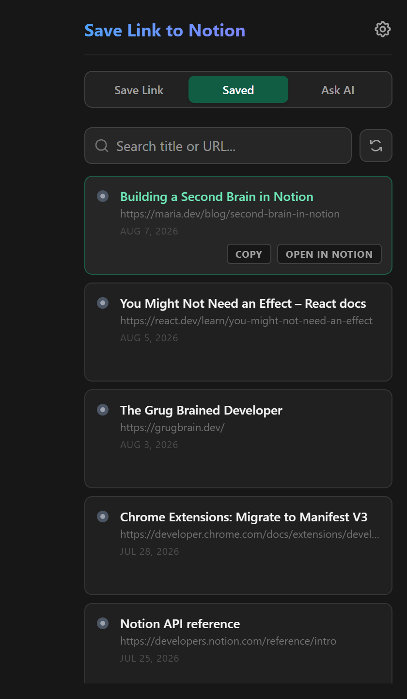
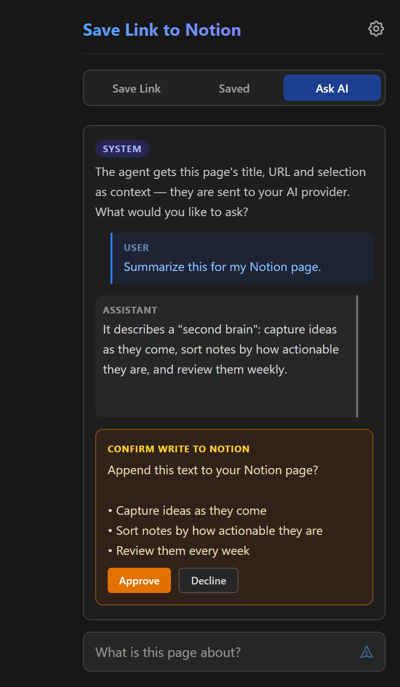
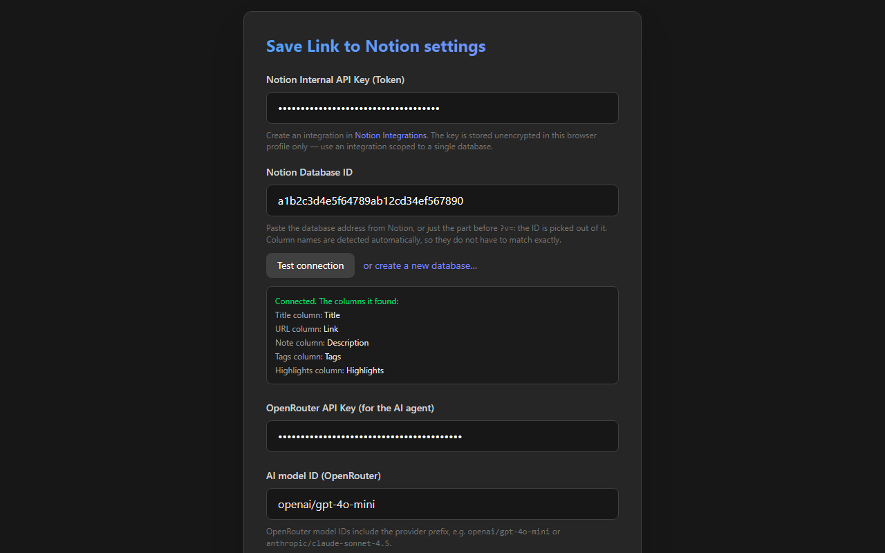

The title, the link, your note, tags and the text you selected, from the toolbar, the right-click menu or one shortcut. Saving the same page again updates its row.
Your keys stay in your browser. No server of mine sits in the middle.

One click to install, and the browser keeps the extension up to date from then on. Works in Chrome and Brave.
Open in the store Free, updates itselfYou need a Notion account and an integration of your own, which takes a minute: create it at notion.so/profile/integrations, connect it to your database (⋯, Connections) and paste its key into the extension's settings, which can also create a ready-made database for you. The AI features are optional and use your own OpenRouter key.
A Notion database is a fine reading list until saving a page takes six steps. This turns it into one, and keeps the page's details with it.
The popup, the right-click menu for a page, a link or the selected
text, and Ctrl+Shift+D, which saves without opening
anything.
Column names do not have to match: the extension reads the schema. Or it creates a ready-made database for you in one click.
The popup says when a page is already saved, and saving it again updates the row instead of adding another.
Clip full article copies the readable text of the page into the Notion page as real headings, lists, quotes, code and images.
A summary and tag suggestions in one click, and a chat about the page. Anything the assistant wants to write to Notion waits for your approval.
A save that cannot reach Notion waits in a queue and goes through on its own later; the toolbar badge shows how many are waiting.
The other two tabs of the popup and the settings, shown with sample data.



The extension talks to Notion and, when you ask it to, to your AI provider. To nothing else. The details are in the privacy policy.
No account, no telemetry and no server of mine. Your keys stay in the browser's own storage, and what you save goes straight to your database.
The extension reads the tab you are on only after you open it or use the shortcut. No content script runs on the pages you visit.
The page title, address, description, your selection and your messages go to the model you chose, and only when you use an AI feature.